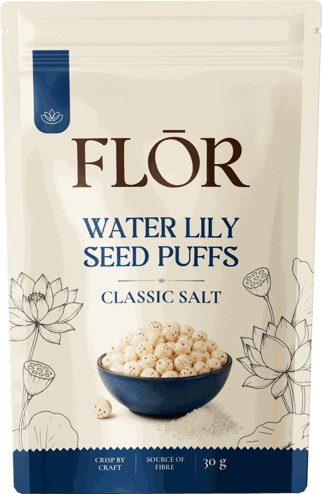
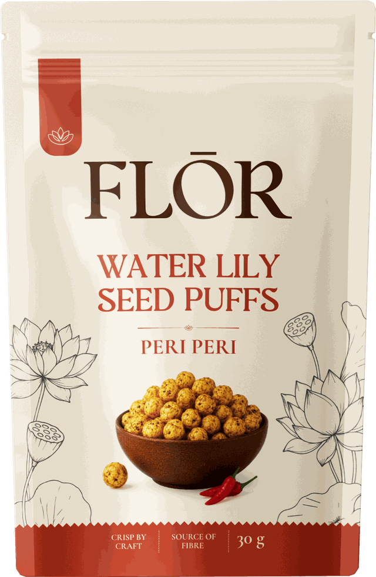
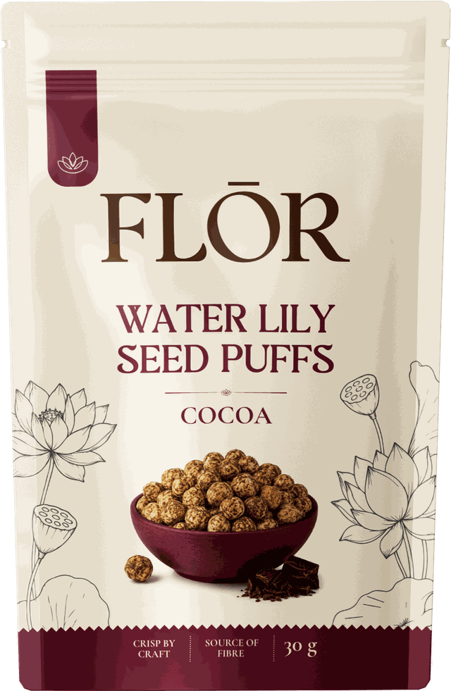

Classic Salt
Clean, savoury and properly crisp.

Because food isn't just something to eat. It's something to discover, enjoy and remember.
The taste, the texture, where it comes from, the culture behind it, and the moments it becomes part of. The food we discover while travelling. The things we bring home. The flavours we introduce to someone else. The bowl we put out when the day needs a pause, something to share when friends and family are around, or the quiet ritual of pouring yourself one at the end of a long day.
We discover foods and snacks from different parts of the world and bring them to new tables. Sometimes to share, sometimes simply to enjoy ourselves.
We start with an ingredient familiar in India but new to many elsewhere: makhana, transformed into light, crisp water lily seed puffs.
A rather unexpected transformation.
Makhana is the seed of Euryale ferox, a water lily traditionally cultivated in India. The seeds are harvested, dried and roasted until they puff into something light, airy and crisp.
Makhana has been eaten in India for generations. We wanted to bring it somewhere new, and let the ingredient speak for itself.
Light & crisp. FLŌR Puffs are seasoned with the same attention we give everything we make: enough to make them interesting, never so much that you lose the ingredient underneath.
Clean, savoury and properly crisp.

A little heat, a little more character.

Deep cocoa notes, for an indulgent bite.
| Classic Salt | Peri Peri | Cocoa | |
|---|---|---|---|
| Vegetarian | ✓ | ✓ | ✓ |
| Vegan | ✓ | ✓ | No |
| Gluten-free | ✓ | ✓ | ✓ |
| Source of fibre | ✓ | ✓ | ✓ |
| High in fibre | ✓ | ✓ | No |
30 g and 11 g pouches. Crisp by craft.
Pre-order the Discovery Box by writing to hello@florpuffs.com
Sustainability isn't something we're adding to FLŌR because we're supposed to. It's a must-have for us. Our makhana is sourced through a trader today, and we're exploring ways to source more directly and pay farmers a meaningful premium. Our pouch isn't perfect either. Protecting crispness means a multi-layer pack, and our ambition is a mono-material, recyclable one. We're still at the beginning, and honest about what we haven't figured out yet.
We are Shourya and Nienke, based in Amsterdam.
Between us, we have spent almost two decades in consumer goods and the flower business, industries where sourcing, quality, packaging and presentation matter, and where a good product still has to make its way from producer to consumer.
We have travelled a lot, lived around different cultures and, like most people who are curious about the world, tend to come home with things we've eaten rather than things we've bought.